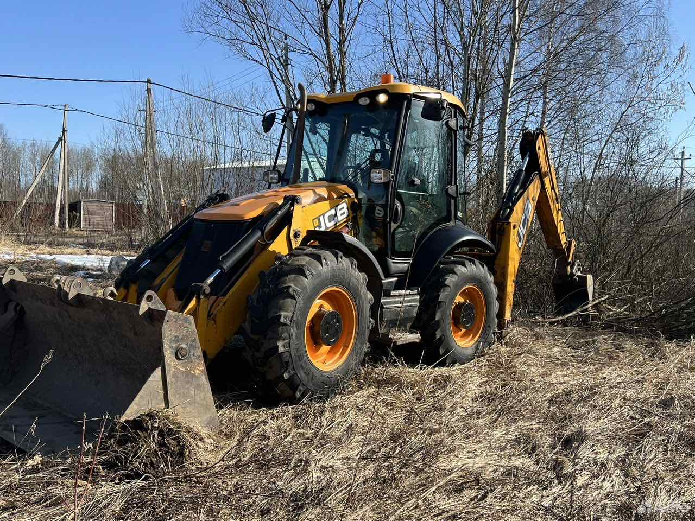
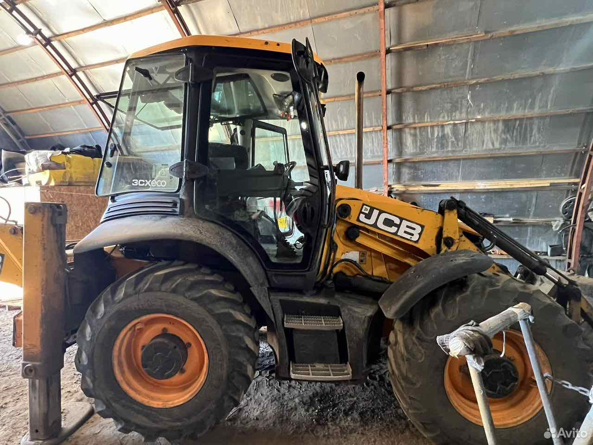
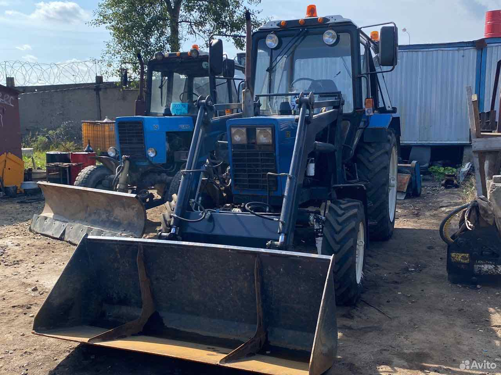
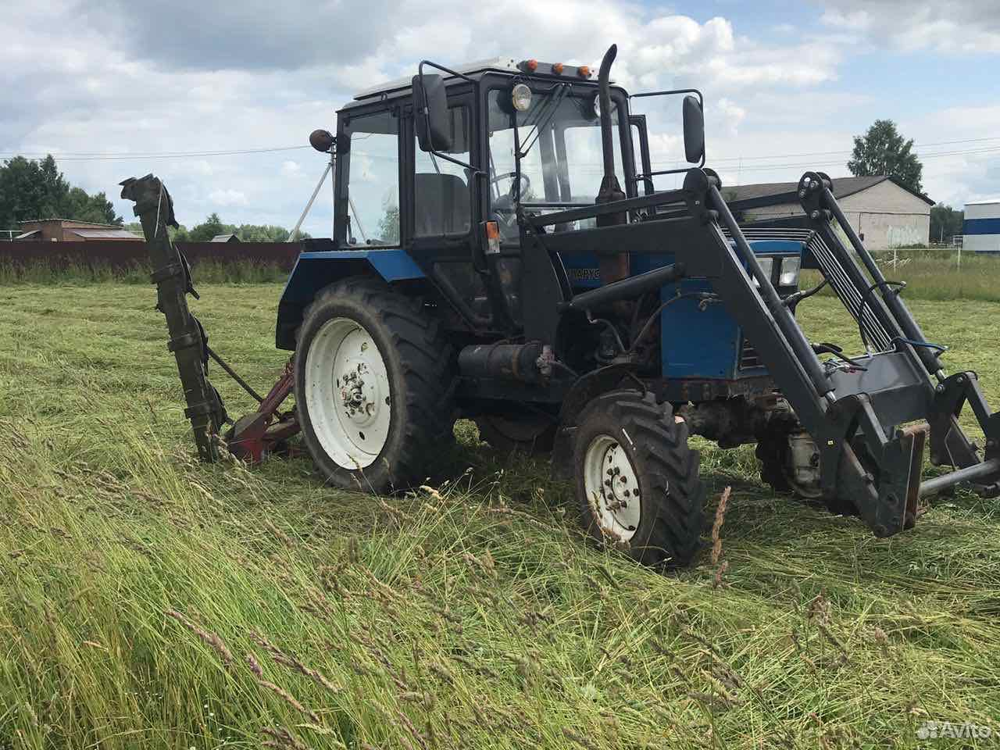
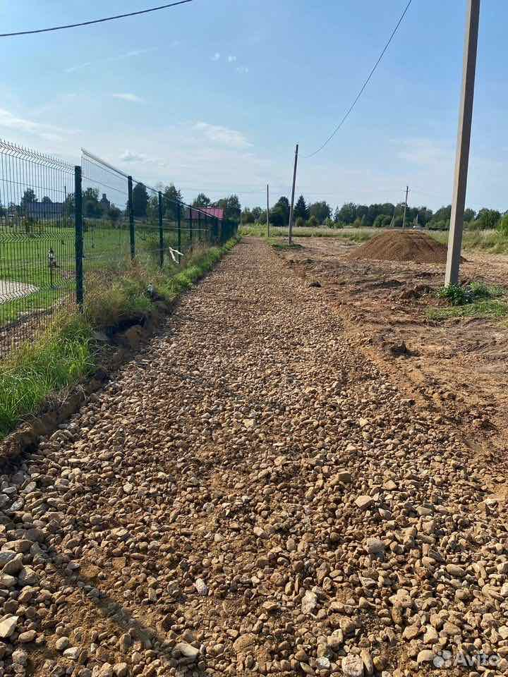
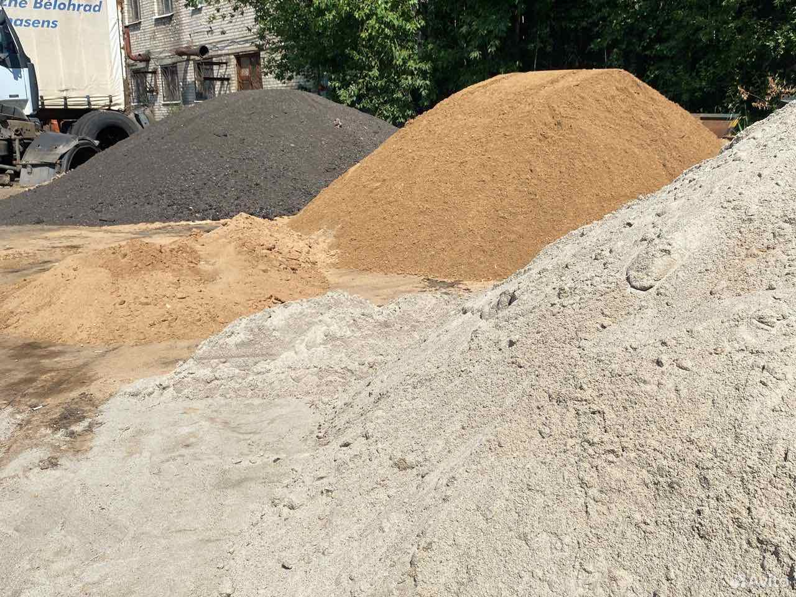

С операторомЭкскаватор-погрузчик
JCB 4CX
Расчистка участка, погрузка, планировка.
- Копание
- До 5 м
- Заказ от
- 4 часа
от 2 800 ₽/часРассчитать ↗
Ярославль и область
Расчистить участок. Выкопать котлован. Убрать снег. Свои JCB и МТЗ с операторами — для частных заказов, строек и обслуживания территорий.
От разового выезда
до договора на сезон
Вы описываете задачу.
Мы помогаем подобрать машину.
Начните с задачи. Марку машины
можно выбрать вместе.
Расчистка дворов и проездов, погрузка и вывоз снега.
Обсудить уборку ↗Котлован, траншеи, дренаж, корчёвка и планировка.
Подобрать технику ↗Покос, расчистка кустарника, дробление веток и вывоз мусора.
Обсудить работы ↗Песок, щебень, ПГС и грунт с доставкой на объект.
Выбрать материал ↗Техника предоставляется с оператором.
Подачу и итоговую стоимость согласуем
по адресу и объёму работ.

С операторомЭкскаватор-погрузчик
Расчистка участка, погрузка, планировка.

С операторомЭкскаватор-погрузчик
Траншеи, котлованы и работы в стеснённых условиях.

С операторомТрактор с навесным оборудованием
Снег, уборка территории и сезонный покос.
Колёсный экскаватор · 17 т · ковш 1,3 м³ · копание до 6 м
Минимальный заказ — 8 часов
Ориентиры из объявлений Авито на 28.10.2026. Доступность техники, актуальный тариф, подача и состав цены уточняются до заказа.
Предварительный расчёт
Выберите машину и время работы. Получите ориентир и готовый текст обращения — его можно отправить Виталию на Авито.
Не знаете, что выбрать? Оставьте «Помогите подобрать» и опишите задачу.
Сразу перейти в профиль Авито ↗Управляющим компаниям и ТСЖ
Зимнее обслуживание дворов и проездов. Обсудим вашу территорию, состав работ и порядок выездов на сезон.
Обсудить сезонный договор ↗ЗимойРасчистка, погрузка и вывоз снега
ЛетомПокос, расчистка и уход за территорией
Перед договоромГраницы участка, график и стоимость работ
Собственный парк и фотографии
из объявлений Виталия.
Можно посмотреть на Авито.


Общаетесь с владельцем парка.
Машина приезжает с машинистом.
Формат оплаты и договор обсудим до выезда.
36 отзывов в профиле Авито
По сохранённым данным на 28.10.2026
В отзывах о земляных работах повторяются три вещи: техника приезжает к согласованному времени, оператор понимает задачу, участок приводят в порядок.
В отзывах о доставке материалов хвалят оперативность и работу водителя.

Материалы с доставкой
Песок, ПГС, щебень, отсев, бой асфальта, грунт и чернозём. Доставка по Ярославлю и области.
Для расчёта сообщите материал, объём и адрес. Если есть ограничения для въезда — предупредите заранее.
Узнать стоимость доставки ↗Опишите задачу и приложите фотографии объекта в переписке на Авито. Укажите размеры участка, ширину въезда и желаемую дату. Вместе подберём машину и оборудование.
По объявлениям минимальный заказ JCB 4CX и МТЗ — 4 часа, JCB 3CX — 5 часов, JCB JS160W — 8 часов. Условия для конкретного объекта уточняются при обращении.
На сайте указан почасовой ориентир из объявлений. Итог зависит от машины, длительности и объекта. До выезда уточните, включены ли подача, топливо, навесное оборудование и вывоз. Расчёт на сайте не заменяет согласованную смету.
Да, в объявлениях указана работа с физическими и юридическими лицами по договору. Форму оплаты, НДС и необходимые документы согласуйте при заказе.
В объявлениях указана круглосуточная работа. Возможность выезда на нужную дату и время зависит от доступности техники — уточните её заранее.
Начнём с вашей задачи
Адрес, задача, желаемая дата. Фотография объекта поможет быстрее разобраться в деталях.